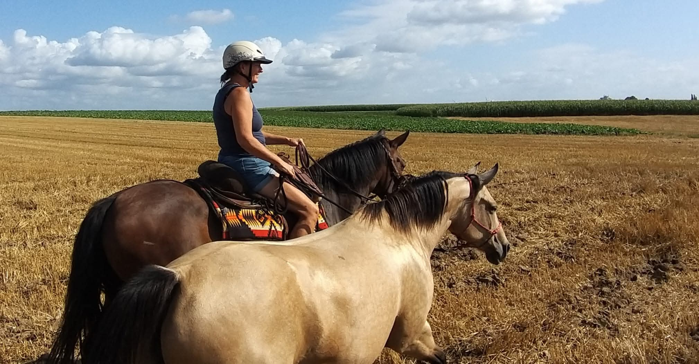
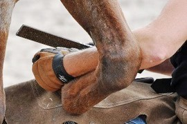

Paardenwelzijn in zijn puurste vorm
Welkom bij Spirithorses. Sinds 2016 zijn wij geen traditioneel manegebedrijf meer, maar hebben wij ons volledig toegelegd op wat een paard écht nodig heeft om paard te kunnen zijn. Gevestigd in het rustige Hees-Bilzen, bieden wij een plek waar natuurlijke behoeften centraal staan.
Natuurlijk Paardenpension
Ons paardenpension is meer dan alleen een stalplek; het is een Paddock Paradise waar de kudde 24/7 buiten leeft. De paarden worden gestimuleerd om te bewegen over verschillende ondergronden, wat bijdraagt aan hun fysieke en mentale gezondheid. Met onbeperkt kwaliteitshooi in slowfeeders en een stabiele sociale groep creëren we een omgeving van rust en balans.

Onze Filosofie: Bitloos, Ijzerloos, Zweeploos
Wij werken vanuit een diepe verbinding en wederzijds respect. Dit betekent dat we rijden zonder bit, de hoeven natuurlijk onderhouden zonder ijzers, en trainen zonder het gebruik van een zweep als strafmiddel. Onze aanpak is gebaseerd op meer dan 20 jaar ervaring en studie naar natuurlijk paardengedrag en lichaamstaal.
Natuurlijk Bekappen aan Huis
De hoeven zijn de fundering van het paard. Als gecertificeerde bekappers werken we volgens de principes van de wilde mustang. We komen bij u aan huis om niet alleen de hoeven te onderhouden, maar ook advies te geven over voeding en huisvesting, zodat uw paard met succes ijzerloos door het leven kan gaan.

Cursuslocatie Spirithorses
Onze voormalige koestal is omgebouwd tot een sfeervolle cursusruimte van 130 m³. Een plek waar we onze passie delen tijdens kennismakingsmiddagen en waar andere professionals hun workshops en coaching-sessies kunnen geven in een oase van privacy en weidse uitzichten.
Maak kennis met onze kudde